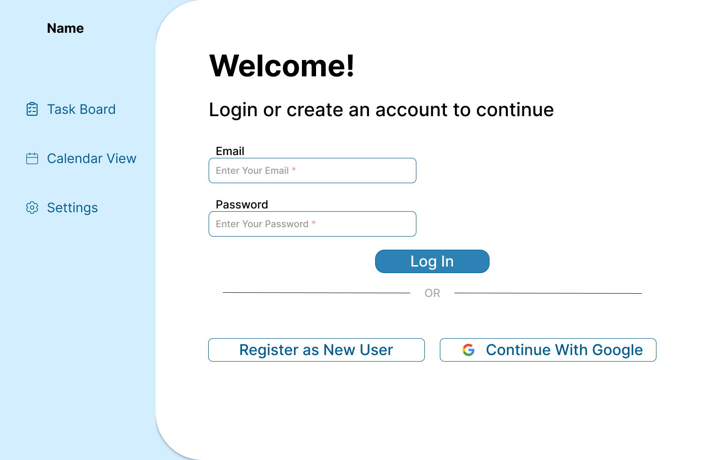
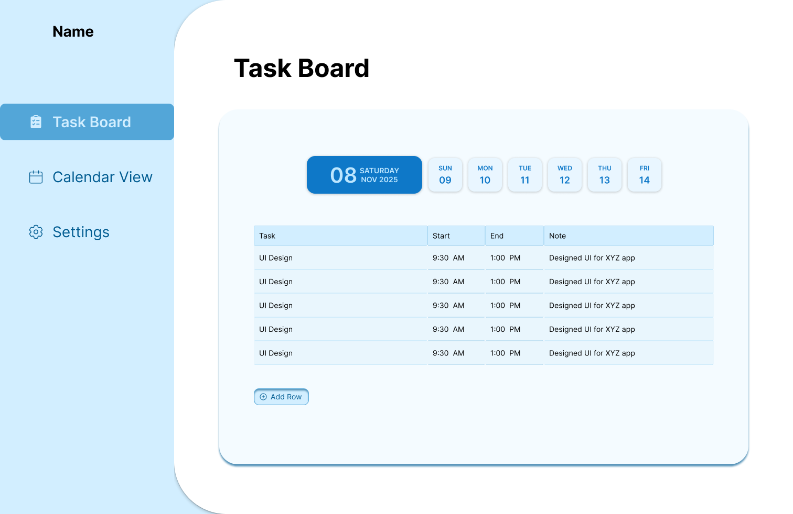
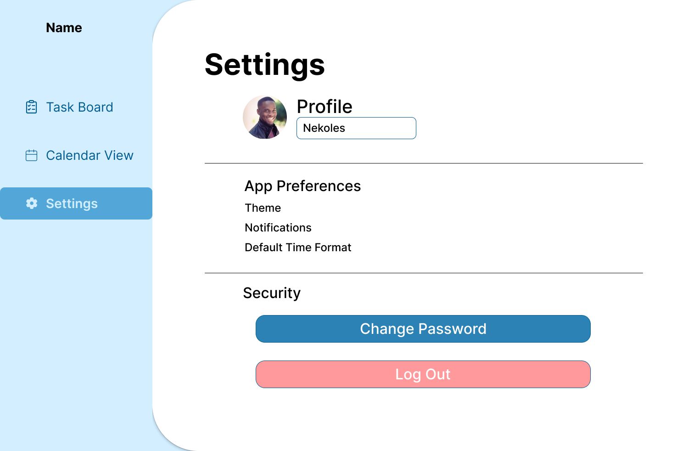

Streamlining Daily Work Reporting for Internal Teams
Employees were reporting daily work through informal messages, manual tracking, unstructured notes, and verbal updates.
The company needed a structured system to standardize daily reporting.
The focus was simplicity and clarity.






Distraction-free layout for daily usage.
Side-by-side time fields reduce confusion.
Maintains data integrity and reliability.
Different indicators for company and personal events.
The Work Log Management System is an internal web tool that enables employees to log time-based work entries while maintaining structured historical records and a shared company calendar, improving reporting clarity and accountability.